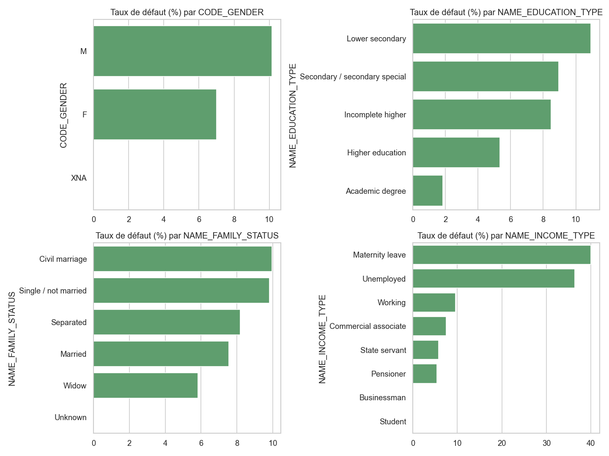
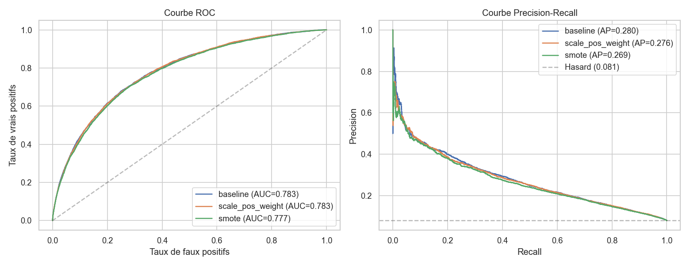
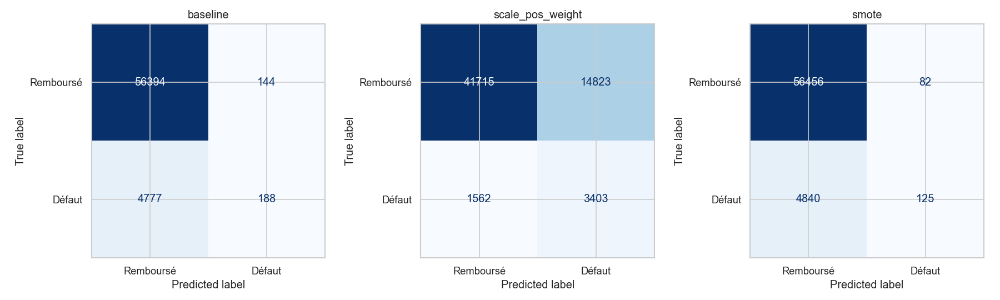
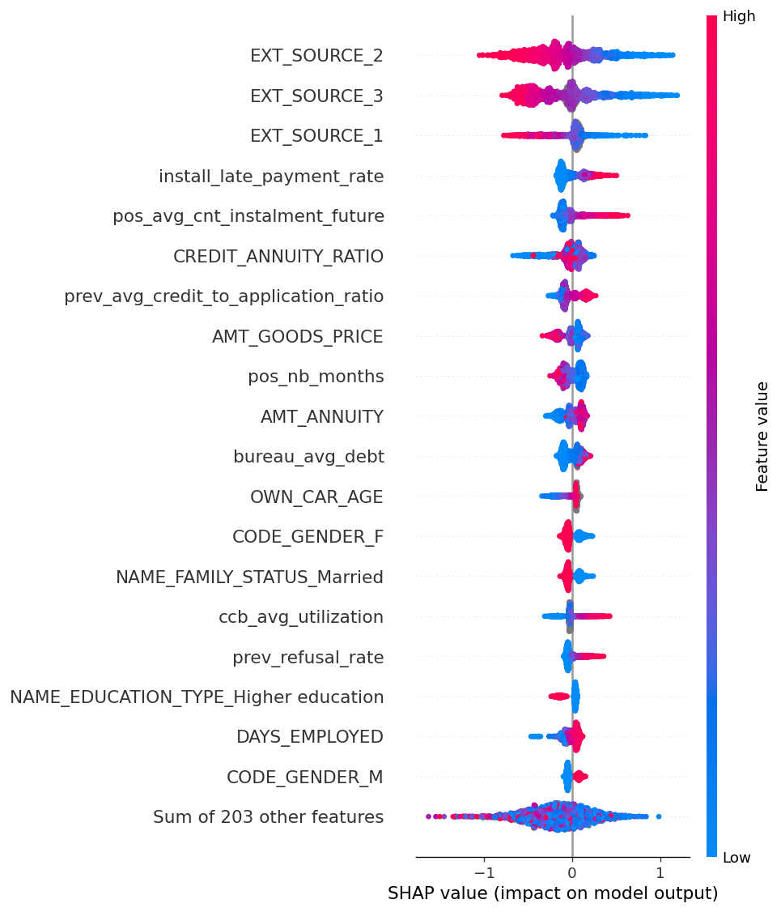
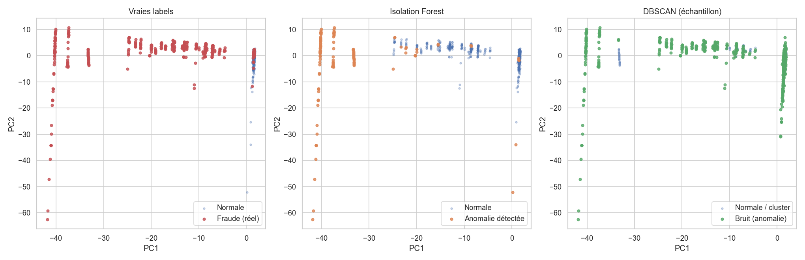
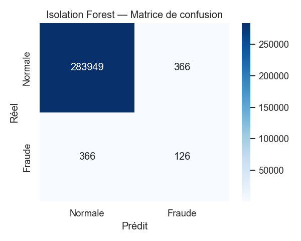
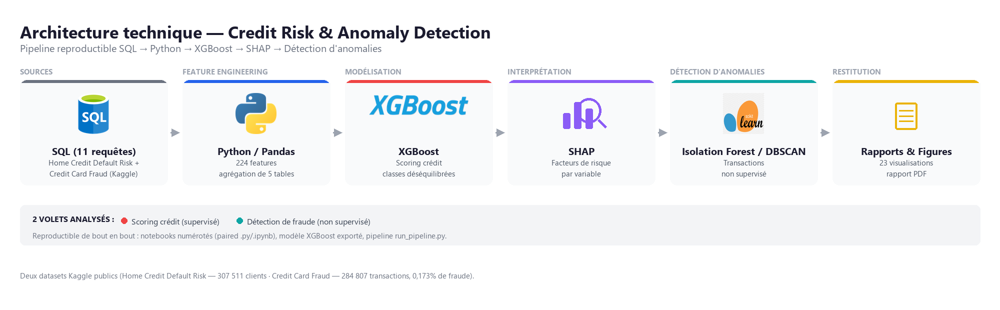

Pipeline SQL + Python sur 307 511 emprunteurs et 284 807 transactions réelles : scoring du risque de défaut par XGBoost, interprétabilité SHAP et détection non supervisée d'anomalies transactionnelles SQL + Python pipeline across 307,511 borrowers and 284,807 real transactions: default risk scoring via XGBoost, SHAP interpretability and unsupervised transaction anomaly detection
Voir la documentation complète (PDF) View Full Documentation (PDF)
Une institution de crédit doit (1) évaluer le risque de défaut d'un emprunteur avant d'accorder un prêt, et (2) surveiller ses transactions en production pour détecter des comportements frauduleux ou anormaux. Ce projet couvre les deux volets sur des données financières réelles : 307 511 emprunteurs (8 tables liées) et 284 807 transactions (0,173% de fraude). A credit institution must (1) assess a borrower's default risk before granting a loan, and (2) monitor its production transactions to detect fraudulent or abnormal behavior. This project covers both areas on real financial data: 307,511 borrowers (8 linked tables) and 284,807 transactions (0.173% fraud).

Taux de défaut par segment — écarts marqués selon le type de revenu (jusqu'à 40% pour le congé maternité) Default rate by segment — sharp gaps by income type (up to 40% for maternity leave)
Sur ~8% de défauts, un modèle naïf (baseline) ne détecte quasiment aucun défaut (rappel 3,5%) malgré un ROC-AUC honorable de 0,780 — un piège classique du déséquilibre de classes. Trois stratégies de rééquilibrage sont comparées en validation croisée 5 folds. With ~8% defaults, a naive (baseline) model detects almost no defaults (3.5% recall) despite a decent 0.780 ROC-AUC — a classic class-imbalance trap. Three rebalancing strategies are compared via 5-fold cross-validation.

Le PR-AUC seul ne suffit pas à départager : le rappel au seuil métier révèle l'écart opérationnel réel

61 503 clients jamais vus à l'entraînement : 61,503 customers never seen during training:

SHAP beeswarm — impact de chaque variable sur le score de risque prédit SHAP beeswarm — each variable's impact on the predicted risk score
Les scores externes EXT_SOURCE_1/2/3 dominent l'importance globale, mais plusieurs
features construites en feature engineering — taux de retard de paiement, ratio
crédit/annuité, taux de refus des demandes précédentes, endettement moyen — figurent dans le top
20, validant l'effort d'agrégation SQL.
The external scores EXT_SOURCE_1/2/3 dominate global importance, but several
features built during feature engineering — late payment rate, credit/annuity
ratio, previous-application refusal rate, average debt — rank in the top 20, validating the SQL
aggregation effort.
Sur 284 807 transactions réelles, seules 492 (0,173%) sont frauduleuses — un déséquilibre encore plus extrême que le volet crédit, traité ici sans labels par deux approches non supervisées complémentaires. Across 284,807 real transactions, only 492 (0.173%) are fraudulent — an even more extreme imbalance than the credit part, handled here without labels via two complementary unsupervised approaches.
eps
a échoué (distribution à queue lourde) → remplacée par une heuristique du 95e percentile
Methodological note: the "elbow" method for choosing eps failed
(heavy-tailed distribution) → replaced by a 95th-percentile heuristic

Projection PCA : vraies fraudes vs détections Isolation Forest et DBSCAN PCA projection: real fraud vs. Isolation Forest and DBSCAN detections

Isolation Forest — matrice de confusion sur l'ensemble des transactions Isolation Forest — confusion matrix on the full transaction set

Pipeline reproductible : notebooks numérotés (paired .py/.ipynb), modèle XGBoost exporté, orchestré par run_pipeline.py Reproducible pipeline: numbered notebooks (paired .py/.ipynb), exported XGBoost model, orchestrated by run_pipeline.py
 Python / Pandas
Python / Pandas
 XGBoost
XGBoost Isolation
Forest
Isolation
ForestLe rappel passe de 3,5% (baseline) à 68,5% sur le test set, rendant le score opérationnellement exploitable. Recall jumps from 3.5% (baseline) to 68.5% on the test set, making the score operationally usable.
SHAP confirme la pertinence des features métier construites (retards de paiement, ratios de crédit) en plus des scores externes. SHAP confirms the relevance of engineered business features (late payments, credit ratios) alongside external scores.
DBSCAN atteint un F1 de 0,428 sur un échantillon stratifié, démontrant la viabilité d'une détection non supervisée. DBSCAN reaches an F1 of 0.428 on a stratified sample, demonstrating the viability of unsupervised detection.